Claude 잔액 키트 설치 안내
웹 안내서 : https://kongsak-kr.github.io/claude-balance-kit/ (설치 명령은 여기서 「복사하기」로 복사하세요)
맥에서 한 줄만 붙여 넣으면 설치가 시작되고, 그다음은 화면에 나오는 안내를 하나씩 따라 하면 돼요. 10분쯤 걸려요.
- 크롬 오른쪽 위 $ 아이콘을 누르면 Anthropic(Claude) 크레딧 잔액이 바로 보여요.
- 바탕화면의 OpenCode 열기로 코딩 도우미 OpenCode 를 쓸 수 있어요.
- 맥 (아이맥 · 맥북 모두 돼요)
- 구글 크롬 — 없으면 설치 중에 안내해 드려요
- Anthropic 콘솔(platform.claude.com) 로그인 정보 — 이메일 또는 구글 계정. 크롬에서 미리 로그인해 두면 더 편해요.
터미널 열기
터미널은 맥에 원래 들어 있는 프로그램이에요. 글자로 명령을 넣는 창이에요.
- 키보드에서 ⌘ command 를 누른 채 스페이스 를 누르세요.
- 가운데 검색 창이 뜨면 터미널 이라고 입력하세요.
- return (엔터) 키를 누르세요.
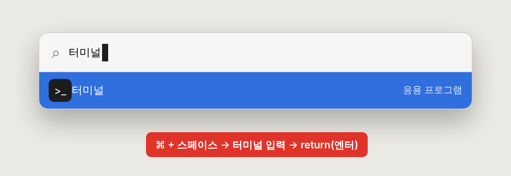
흰색(또는 검은색) 글자 창이 열리면 성공이에요.
설치 명령 붙여 넣기
- 아래 빨간 복사하기 버튼을 누르세요.(종이로 보고 있다면 맥의 크롬에서 kongsak-kr.github.io/claude-balance-kit 를 열고 거기서 복사하세요)
- 터미널 창을 한 번 누르고 ⌘ + V (붙여넣기)를 누르세요.
- return (엔터)를 누르세요.
- 「준비되면 엔터를 누르세요」가 나오면 한 번 더 return.
curl -fsSL https://raw.githubusercontent.com/KongSak-Kr/claude-balance-kit/main/install.sh | bash
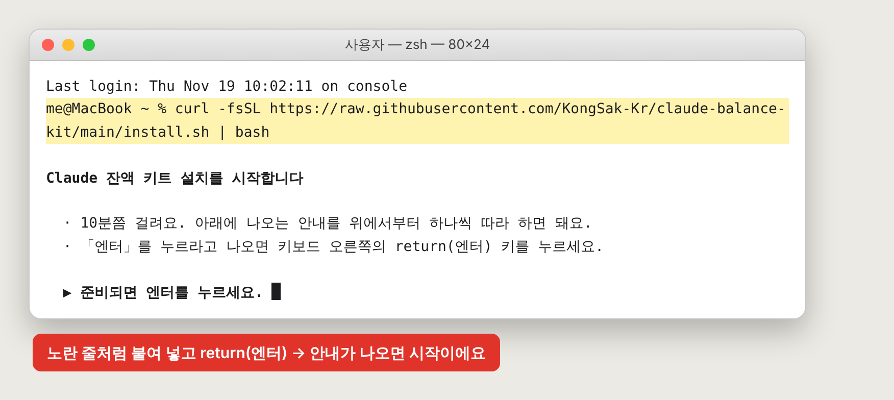
API 키 넣기
OpenCode 가 Claude 를 쓰려면 「API 키」라는 열쇠가 필요해요. 터미널이 크롬에 키 만드는 화면(API keys)을 열어 줘요. 콘솔 화면은 영어라서 누를 버튼 이름을 영어 그대로 적었어요.
- 로그인 화면이 나오면 먼저 로그인하세요.
- 오른쪽 위 Create key 버튼을 누르세요.
- Name(이름) 칸에 OpenCode 라고 쓰세요.
- Workspace 를 고르는 칸이 있으면 Default 를 고르세요.
- Add 버튼을 누르세요.
- sk-ant-api 로 시작하는 긴 키가 나오면 옆의 Copy 를 누르세요.
- 터미널 창을 한 번 누르고 ⌘ + V → return
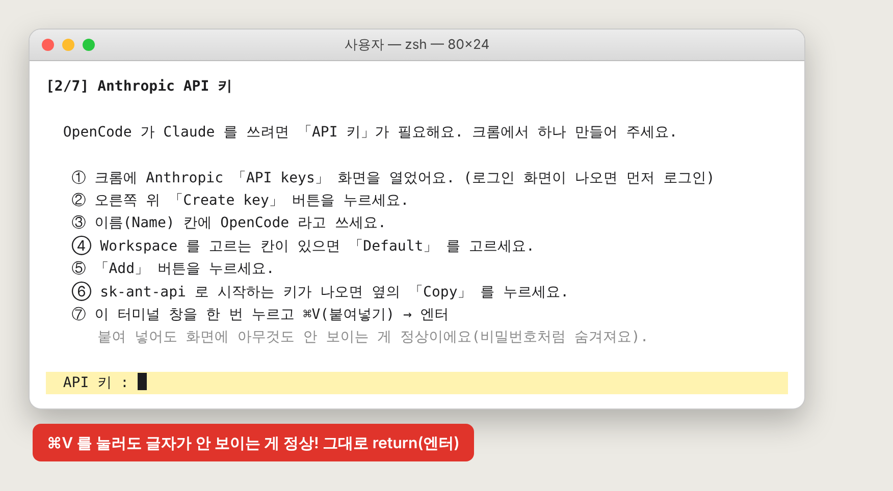
「키가 확인되었습니다」가 나오면 다음으로 넘어가요. 「키 오류」가 나오면 키를 다시 복사해서 붙여 넣으세요(3번까지 할 수 있어요).
기다리기 (자동으로 설치돼요)
- 「OpenCode 설치 중」 뒤에 점(.)이 찍히는 동안 1~2분 기다리세요.
- 「맥을 켤 때 OpenCode 가 자동으로 켜지게 하고 … 아이콘을 만들까요?」가 나오면 그냥 return (예)을 누르세요.
- 「터미널이 데스크탑 폴더에 접근하려고 합니다」 창이 뜨면 허용을 누르세요.
크롬에 확장 넣기
터미널이 크롬에 「확장 프로그램」 화면을 열어 줘요. 화면이 안 보이면 크롬 맨 위 주소창을 누르고 ⌘ + V → return (주소를 복사해 뒀어요).
① 개발자 모드 켜기
화면 오른쪽 위 개발자 모드 스위치를 눌러 켜세요. 파란색이 되면 켜진 거예요. 그다음 터미널로 돌아와 return.
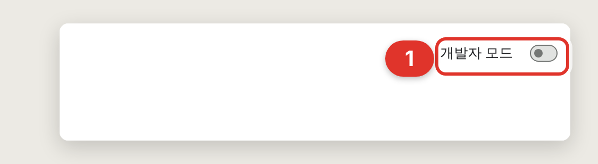
② 압축해제된 확장 프로그램 로드
왼쪽 위에 새로 생긴 압축해제된 확장 프로그램 로드 버튼을 누르세요.
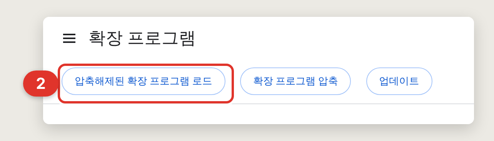
③ 폴더 고르기
- 폴더를 고르는 창이 뜨면 ⌘ + Shift + G 세 개를 함께 누르세요.
- 작은 입력 칸이 나오면 ⌘ + V → return (폴더 위치를 터미널이 복사해 뒀어요).
- 창 오른쪽 아래 선택 을 누르세요.
- 터미널로 돌아와 return.
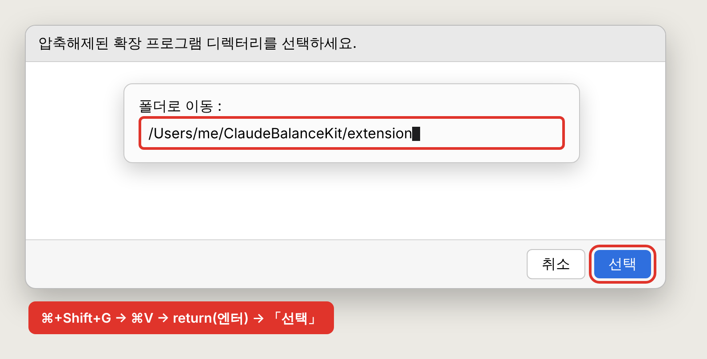
④ 들어갔는지 보기
「확장 프로그램」 화면에 Claude 잔액 키트 카드가 생기면 성공이에요. 터미널도 스스로 확인해서 「✓ 크롬에 잘 들어갔어요!」라고 알려 줘요.
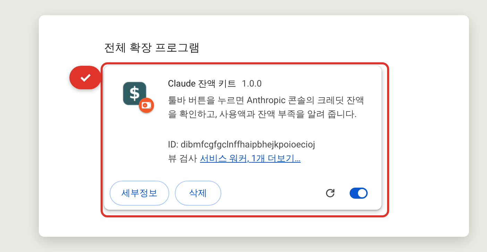
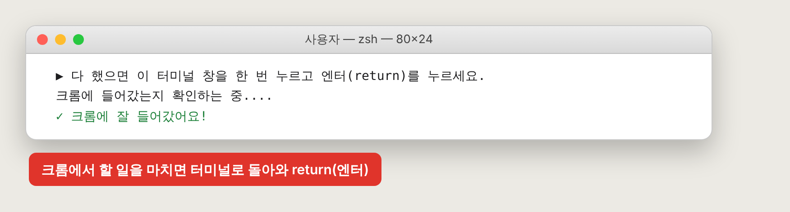
툴바에 고정하기
- 크롬 오른쪽 위, 주소창 끝의 퍼즐 조각 모양 아이콘을 누르세요.
- 목록에서 「Claude 잔액 키트」 오른쪽의 핀(압정) 모양을 누르세요.
- 주소창 오른쪽에 청록색 $ 아이콘이 생기면 된 거예요. 터미널로 돌아와 return.
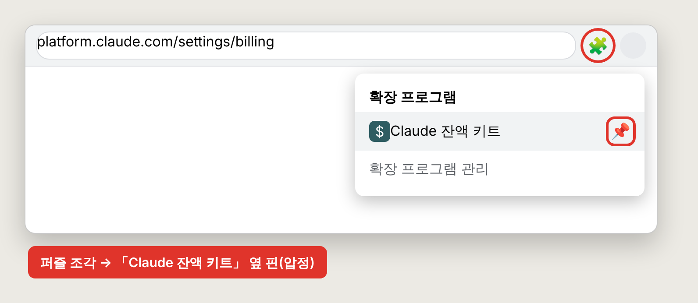
잔액 확인해 보기
- 터미널이 크롬에 결제(Billing) 화면을 열어 줘요. 로그인 화면이 나오면 로그인하세요.
- 화면에 Credit balance(크레딧 잔액) 금액이 보이면, 주소창 오른쪽 $ 아이콘을 누르세요.
- 작은 창 맨 위에 잔액이 진한 글씨로 나오면 성공이에요. 터미널로 돌아와 return.
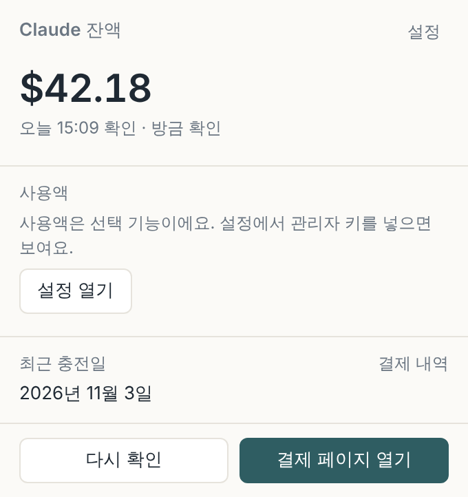
다음 질문 「지금 관리자 키를 넣을까요?」는 잘 모르면 그냥 return 을 누르세요. 그러면 설치가 끝나요.
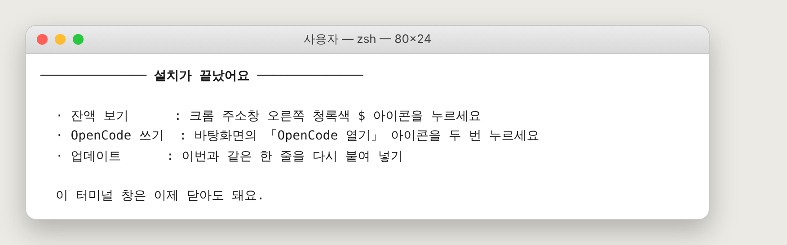
(선택) 관리자 키 — 사용액 · 잔액 부족 알림
오늘 · 이번 주 · 이번 달 사용액과 잔액 부족 알림까지 쓰고 싶을 때만 해요. Anthropic 콘솔의 조직 관리자만 만들 수 있어서, 잘 모르면 건너뛰어도 돼요. 잔액 보기는 이 단계 없이도 돼요.
- 크롬에서 platform.claude.com/settings/admin-keys 를 여세요.
- Create admin key → 이름 칸에 잔액확장 → Add
- sk-ant-admin 으로 시작하는 키 옆 Copy
- 크롬의 「Claude 잔액 키트 설정」 탭으로 가세요. 없으면 $ 아이콘 → 오른쪽 위 설정.
- 「관리자 키」 칸(①)을 누르고 ⌘ + V → 연결 확인(②)
- 초록 글씨로 「연결됨」이 나오면 끝이에요.
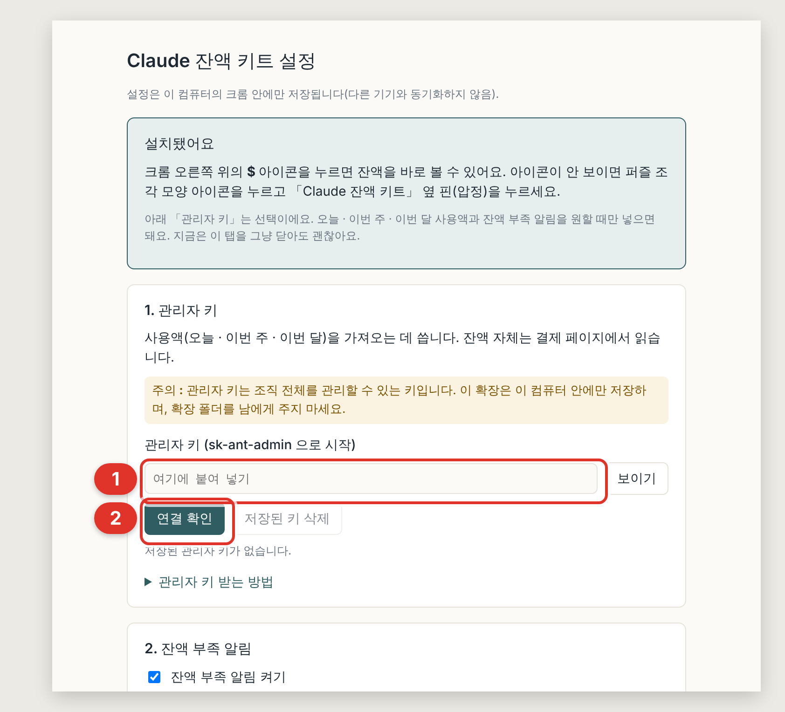
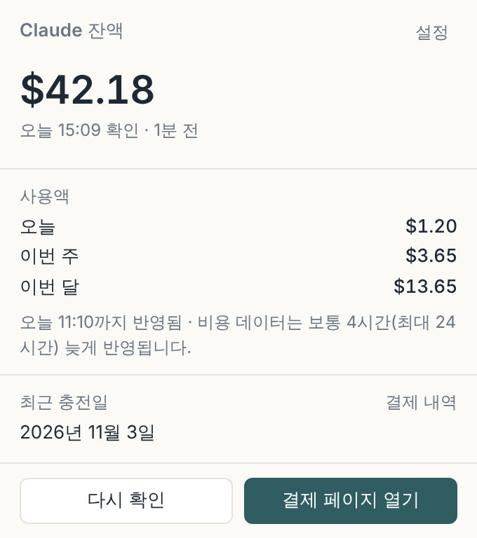
매일 쓰는 법
- 잔액 보기 : 크롬 오른쪽 위 청록색 $ 아이콘을 누르세요. 누를 때마다 새로 확인해요.
- OpenCode 쓰기 : 바탕화면의 OpenCode 열기 아이콘을 두 번 누르세요. 크롬에 OpenCode 가 열려요.
- 잔액 부족 알림(관리자 키를 넣은 경우) : 잔액이 $5 아래로 내려간 것 같으면 $ 아이콘에 작은 빨간 ! 가 붙고 알림이 와요.
업데이트하기
- 터미널을 열고(1단계) 설치 때와 같은 명령을 붙여 넣고 return.
- 「API 키를 새로 넣을까요?」는 그냥 return.
- 터미널 안내에 따라 크롬 「확장 프로그램」 화면에서 카드의 동그란 화살표(↻)를 누르세요.
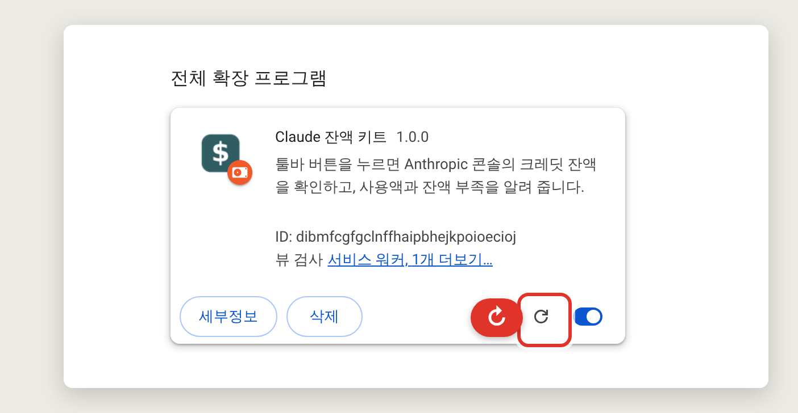
지우기
- 터미널에 아래 명령을 붙여 넣고 return.
- 질문에 답하세요 (키와 OpenCode 를 지울지 물어봐요. 잘 모르면 그냥 return).
- 크롬 「확장 프로그램」 화면에서 「Claude 잔액 키트」 카드의 삭제를 누르세요.
bash ~/ClaudeBalanceKit/uninstall.sh
문제가 생기면
터미널 창이 사라졌어요
화면 아래 Dock 에서 검은 네모 모양 「터미널」 아이콘을 누르세요. 크롬 창 뒤에 숨어 있을 때가 많아요.
API 키를 붙여 넣었는데 아무것도 안 보여요
정상이에요. 비밀번호처럼 숨겨져요. 그대로 return 을 누르세요.
「키 오류」가 나와요
키를 끝까지 복사하지 않았거나 지워진 키예요. 콘솔에서 Create key 로 새 키를 만들어 다시 붙여 넣으세요.
「관리자 키는 크롬 확장 설정에 넣는 키」라고 나오면 sk-ant-admin 키를 넣은 거예요. 설치에는 sk-ant-api 키를 넣으세요.
「작업 공간(Workspace)이 정해지지 않은 키」라고 나와요
키를 만들 때 Workspace 칸에서 Default 를 골라 새로 만든 뒤 붙여 넣으세요.
「확장 프로그램」 화면이 열리지 않아요
크롬 맨 위 주소창을 누르고 ⌘ + V → return. 안 되면 주소창에 chrome://extensions 라고 직접 쓰세요.
폴더를 고르는 창에서 붙여 넣기가 안 돼요
터미널로 돌아가 return 을 누르면 확인 뒤 「r = 처음부터 다시 안내」가 나와요. r → return 을 누르면 폴더 위치를 다시 복사하고 처음부터 안내해 줘요.
직접 찾아가려면 : 창 왼쪽에서 집 모양(홈 폴더) → ClaudeBalanceKit → extension 을 한 번 누르고 선택.
터미널이 계속 「아직 확인이 안 돼요」라고 해요
「확장 프로그램」 화면에 「Claude 잔액 키트」 카드가 보이면 잘 된 거예요. 터미널에서 s → return 을 눌러 넘어가세요.
크롬을 켤 때 「개발자 모드 확장 프로그램 사용 중지」 창이 떠요
웹 스토어가 아닌 곳에서 넣은 확장이라 나오는 안내예요. X(닫기) 또는 취소를 누르세요. 「사용 중지」를 누르면 확장이 꺼지니, 그랬다면 「확장 프로그램」 화면에서 카드의 스위치를 다시 켜세요.
$ 아이콘을 눌렀더니 「콘솔 로그인 필요」가 나와요
크롬에서 platform.claude.com 에 로그인되어 있지 않아요. 결제 화면(「결제 페이지 열기」 버튼)에서 로그인한 뒤 다시 $ 아이콘을 누르세요.
「잔액을 읽지 못함」이 나와요
「결제 페이지 열기」 버튼을 눌러 결제 화면을 한 번 열고, 잔액이 보일 때까지 기다리세요. 그 화면에서 잔액을 읽어 저장해요. 계속 그러면 콘솔 화면이 바뀐 거라 업데이트가 필요해요.
확장이 갑자기 꺼졌어요
홈 폴더의 ClaudeBalanceKit 폴더를 옮기거나 지우면 꺼져요. 설치 명령을 다시 붙여 넣으면 다시 만들어 줘요.
「OpenCode 열기」를 눌러도 아무 일이 없어요
처음엔 10초쯤 걸릴 수 있어요. 그래도 안 되면 맥을 한 번 다시 켠 뒤 눌러 보세요.